Files and batches
Drop audio, video or folders into a queue.
Private transcription, live captions and an editor, all on your Mac.
macOS 26+ · Apple silicon · Free
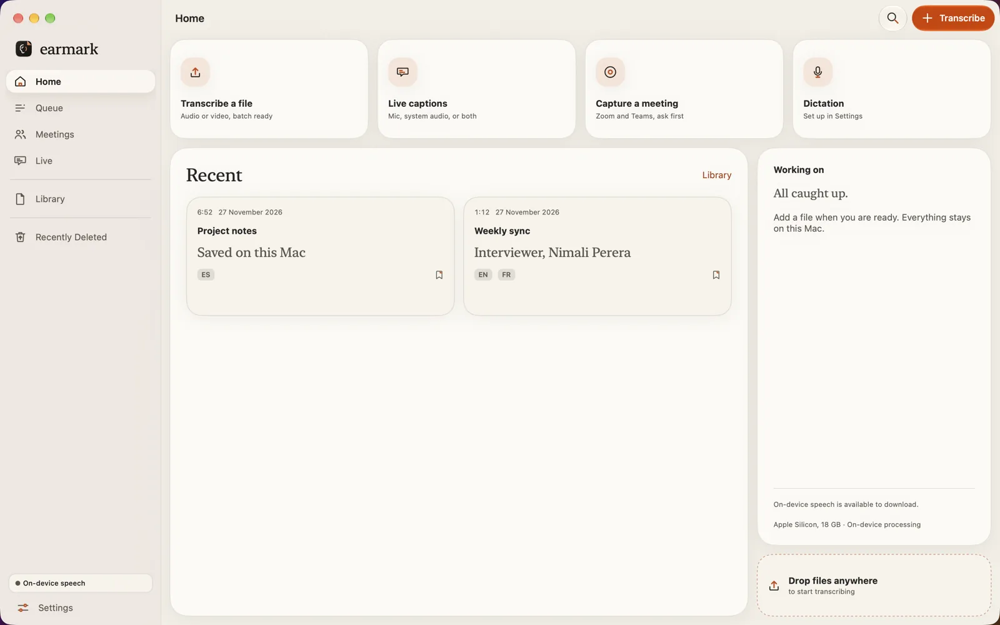
Features
Drop audio, video or folders into a queue.
A floating overlay for mic or system audio.
One shortcut types into the focused app.
Zoom and Teams calls, only when you say so.
Click a word to hear it. Edit text and speakers.
Speech in dozens of languages, live translation, and Sinhala. Original, translated or bilingual.
Documents, data and subtitles in one click.
Audio and transcripts never leave your Mac.
Models
Earmark 1.1 adds a family of on-device speech and translation models. Each one downloads only when you choose it, runs offline, and shows what it can and cannot do before you install it.
Translate live captions with their own switch, source and target pickers in Live.
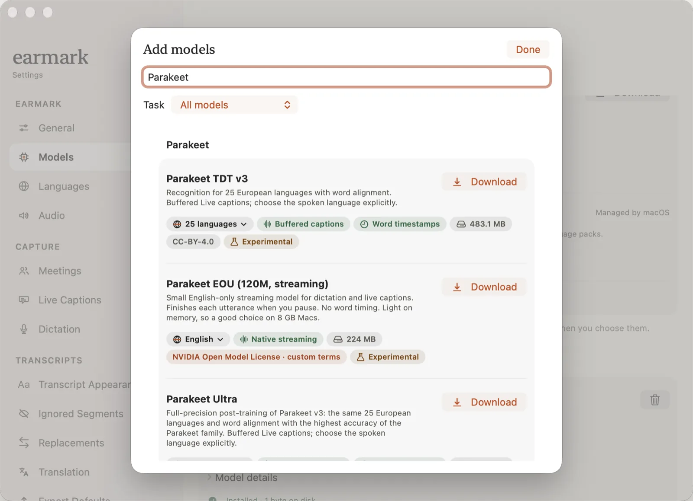
Most new models are marked experimental. Each was checked on real audio, but accuracy varies by language, so Earmark lists only the languages and translation directions it has verified.
Screenshots
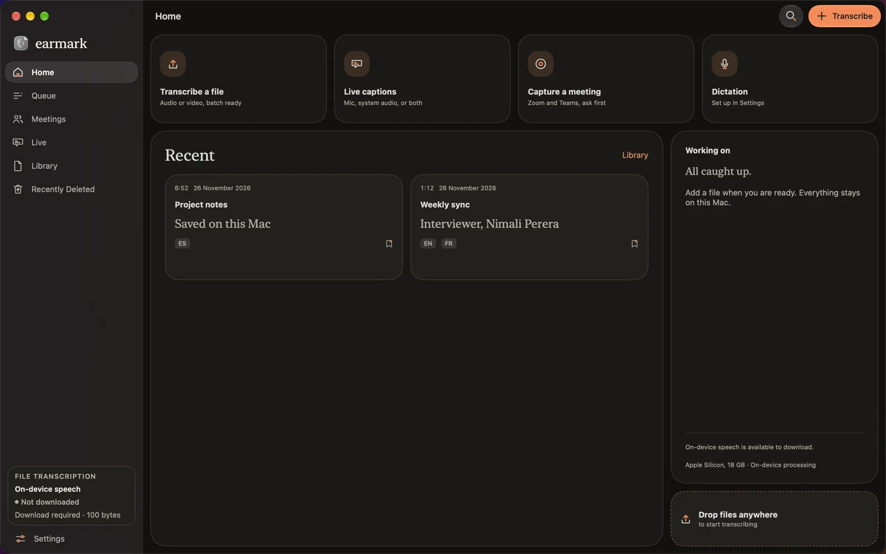
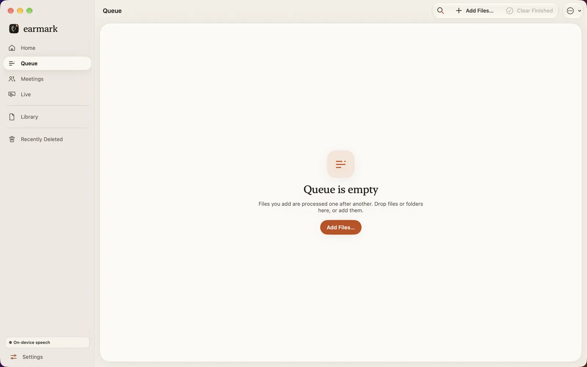
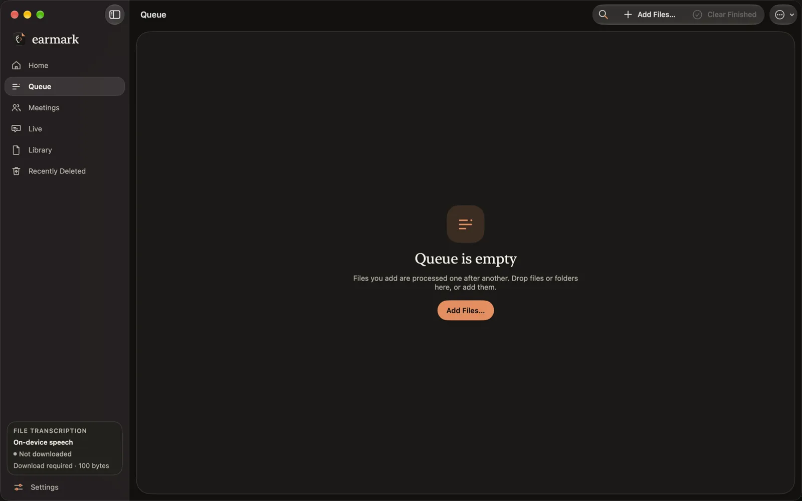
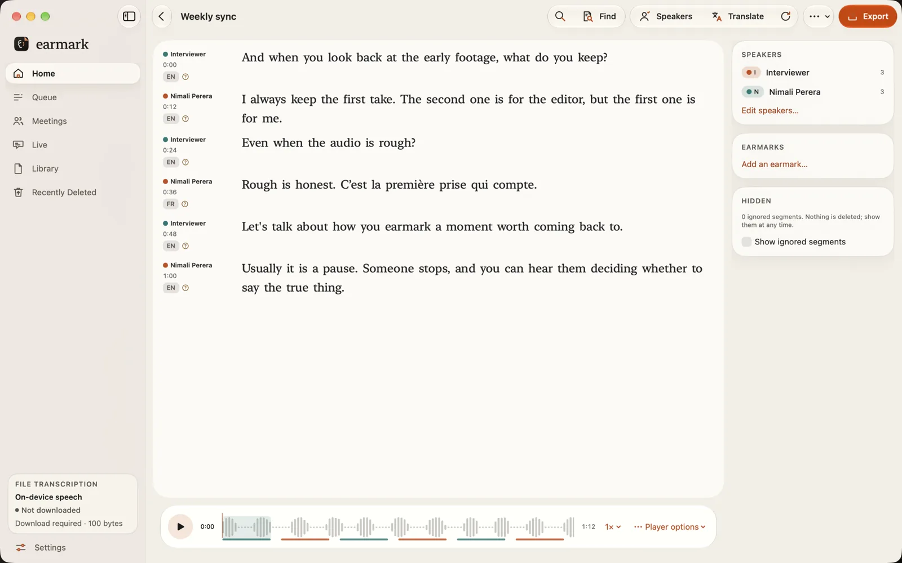
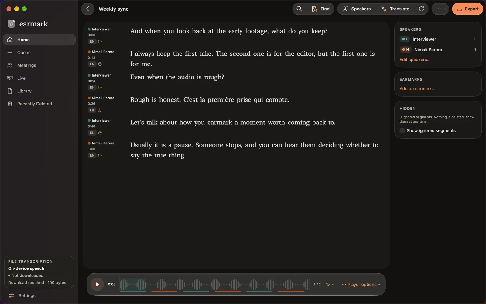
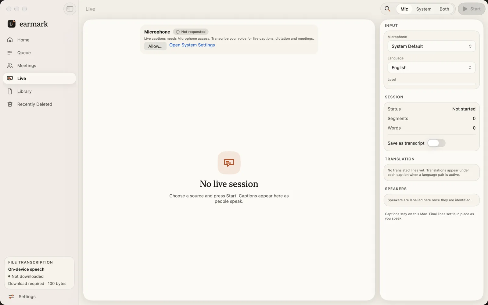
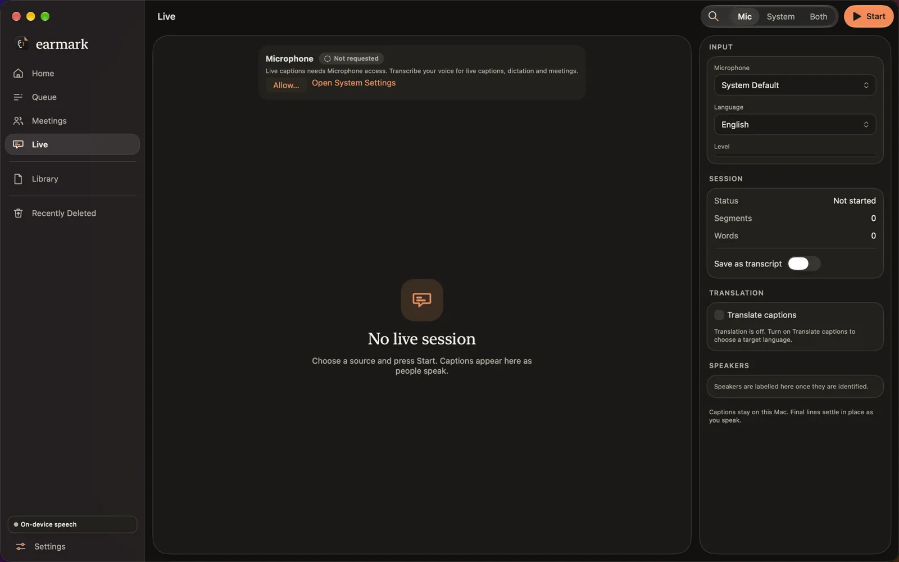
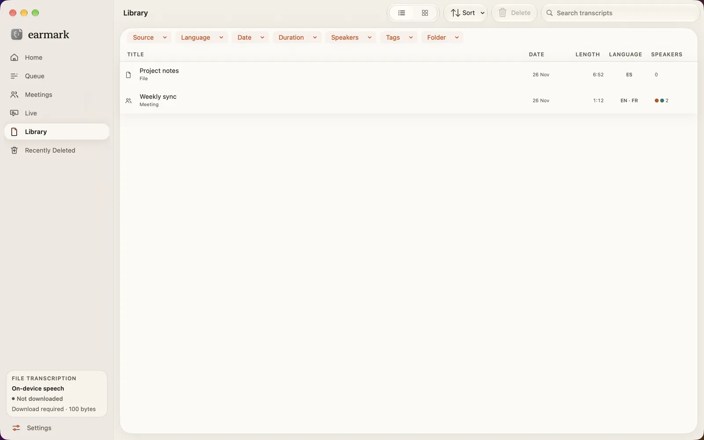
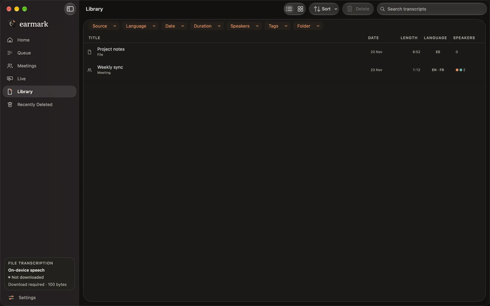
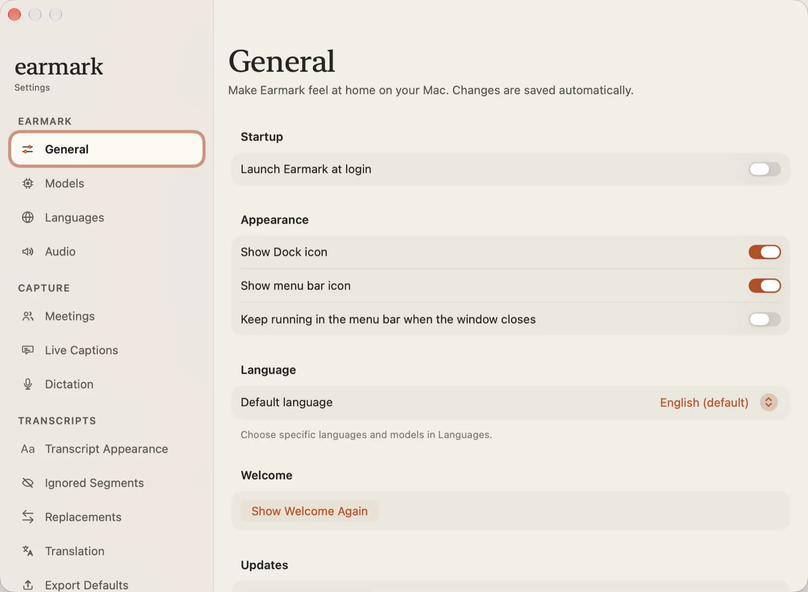
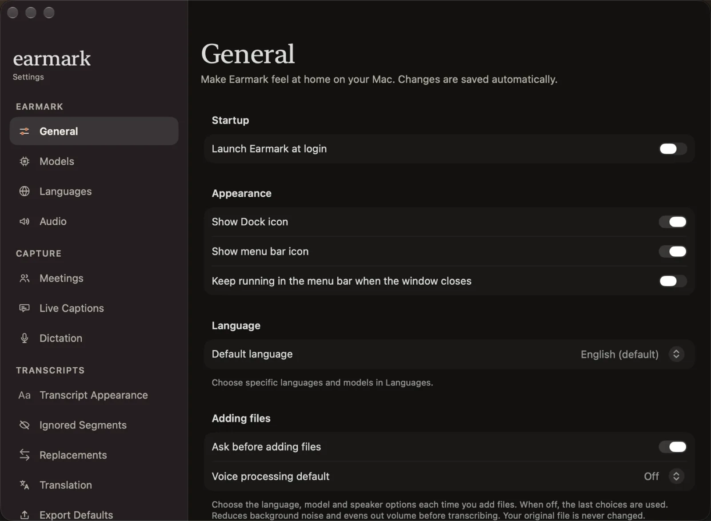
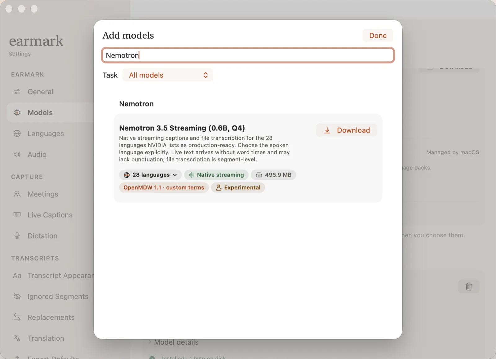
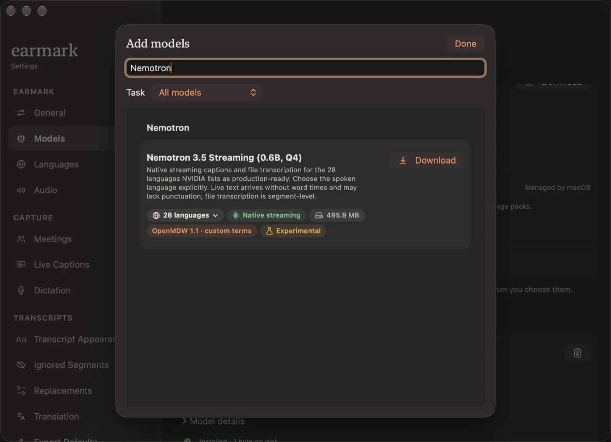
How it works
Download only what you choose, once.
Drop a file, join a call or just speak.
Refine the transcript, then save it your way.
Privacy
Earmark has no accounts and no cloud transcription.
Install
Open System Settings → Privacy & Security and choose Open Anyway.
Or use Terminal instead:
xattr -dr com.apple.quarantine /Applications/Earmark.app
FAQ
Yes. Earmark is open source under the MIT licence. If you like it, you can support it on Ko-fi.
Not your audio or transcripts. The only network use is model downloads you start and optional update checks.
Earmark is signed with a self-signed certificate and is not notarized by Apple. Approve it once, as described above.
Apple silicon Macs running macOS 26 or later.
It depends on the model you pick. Apple Speech and Whisper cover many languages, Parakeet, Nemotron, Canary, Cohere and Voxtral add their own sets, and Sinhala has a dedicated model. Earmark can translate files and live captions and show bilingual transcripts. The model browser lists each model's languages before you download it.
Start with the recommendations on the Models page. Apple Speech suits live captions and dictation, Whisper is a good all-round choice for files, and the newer models are worth trying when you need a specific language or faster streaming. Most are marked experimental.
Every release is listed on the changelog.